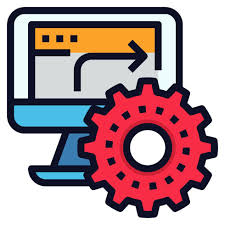

Automation vs. Collaboration

My use of ChatGPT leans heavily into collaboration. As mentioned in earlier sections, my main uses of ChatGPT are for writing and outline assistance, coding, and applying to jobs. All of these uses require collaboration with ChatGPT because they are nuanced, specific topics that require tweaks and reworks to make sure ChatGPT knows what I want it to produce as well as making sure what it produces is up to snuff. This supports points made by Autor and Manyika (2025). They discussed a new AI tool used by radiologists meant to improve the accuracy of diagnoses that actually led to a decrease in accuracy. The radiologists often took the AI’s diagnosis over their own expert diagnoses because the AI projected confidence and its hidden inner workings didn’t let the radiologists see how it came to its conclusions. The AI also didn’t have access to patients’ medical history, which could alter conclusions. Automation did not work in this instance.
I avoid using ChatGPT like this. I could use ChatGPT to automate the tasks I listed earlier, but if I want the best possible answers I still must create effective prompts, provide plenty of background information, evaluate for correctness, and not be afraid to continue to iterate over previous prompts, highlighting the collaboration. When coding, there’s been instances where I’ve asked ChatGPT to generate code to do a task, but the code it gives me does not do the task the way I wanted. This demonstrates that the most effective use comes from human-AI collaboration. ChatGPT provides a large base of knowledge, and I provide context and my expertise on the matters.
References
Autor, D. (2025, August 24). A Better Way to Think About AI. The Atlantic; The Atlantic. https://www.theatlantic.com/technology/archive/2025/08/ai-job-loss-human-enhancement-google/683963/